Team BoardsReview - CM Capstone Spring 2010
Chicago Board of Review Course Site
Design Document
Static Architecture
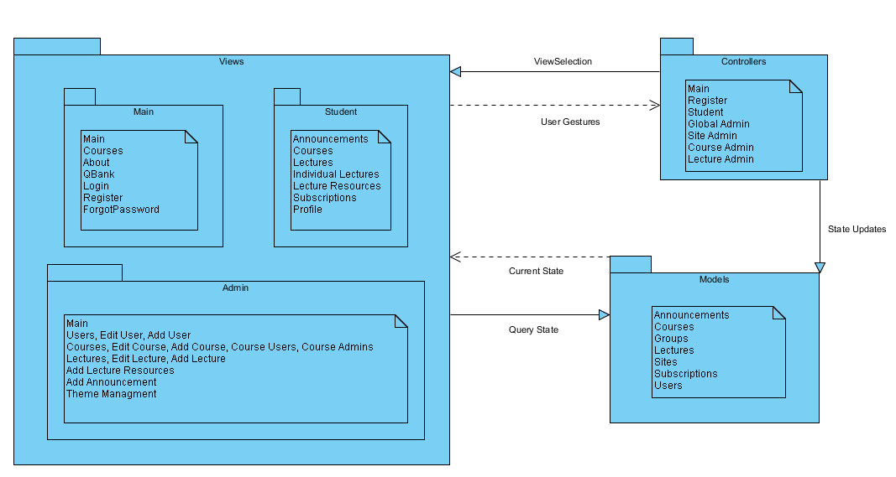
This architecture view shows the general communication between the models, views, and controllers. The model handles communication with the database. The view and controller can talk with the models to obtain database information. At runtime, the controllers build the views and display them to the user.
We have added the following parts to the static architecture: Lecture Resources (Student), Add Lecture Resources (Admin).
Dynamic Architecture
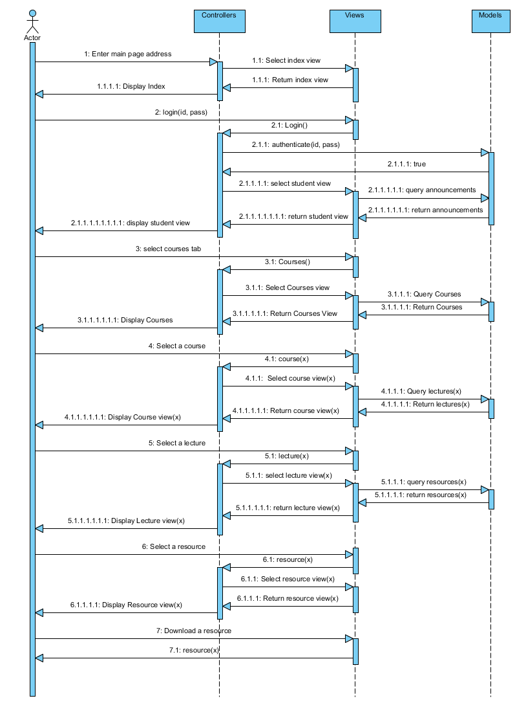
This is a dynamic architecture view which shows specific method calls between views, controllers, and models. We have added the steps of viewing a specific resource and downloading a specific resource.
Rationale
We are using a Client-Server architecture style with a Model-View-Controller (MVC) design pattern. The main reason we are using these is that they were both implemented when the project was started last semester. Because we are performing more of a face-lift of an existing application rather than creating a completely new site, we thought that we would keep the same style and design pattern in order to not create any problems within the system as well as make it faster to implement the site enhancements.
Both the style and design pattern are ideal for the web application we are improving. MVC allows the user interface to easily be changed, or to have multiple views. One of our requirements is customizability, and MVC will allow the user to change the appearance of the pages. Also, multiple pages may be able to use the same model objects. Client-Server will allow us to store all data on a server, which will give us more control over the security of the data. Only designated users should be able to view the material associated with a course, and those users should not be able to easily download the video and slide shows unless otherwise allowed. Client-Server also allows for the server to be replaced/upgraded without the clients knowing, and data updates are fairly simple. The design will function with clients of different capabilities.
However, there are some disadvantages. MVC adds some additional complexity to the coding, and frequent model changes could result in a lot of view updates, which in turn slows down the system. Client-server could be problematic if the server fails or if there is congestion on the network.
We also considered using a layered architecture plan with 3 layers: presentation, business, and data. This architecture plan has many of the same benefits of MVC. However, layered models are typically very linear, so a presentation layer would go through the business layer to get to the data level, and then the response would go through the business layer once again. With MVC, the view can query the model directly and get a response directly.
Data Design: ER Diagram
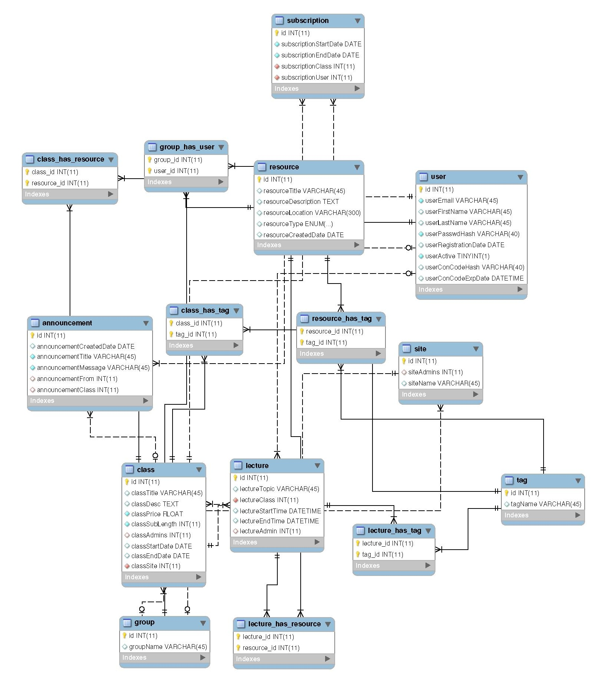
This view shows the entries of the database that is used for the website and shows how they interact with each other.
We have added: Resource - downloadable INT(11); Class - onsite INT(11) & distanceLearning INT(11)
Detailed Design: Navigation Chart
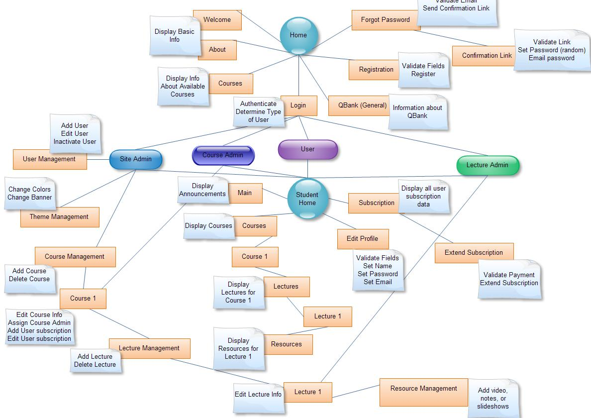
This navigation chart depicts our website. From each of the major nodes (Home, User, Lecture admin, etc), users can see what pages each nodes have access to and how one would get to a certain page.
Current GUI
Home
This is the home page that everyone with an Internet connection will have access to. The home page will contain a little information about Chicago Review Courses, and allow you to log in via a dropdown form. You can also learn more by going to the About tab, which will have more in-depth information on Chicago Review Courses. The QBank tab will talk about QBank, which is a resource that users of this system may be able to use. The Courses tab will list the current courses and previous courses. Forgot password will allow you to reset your password, and register will allow you to register.
Lectures
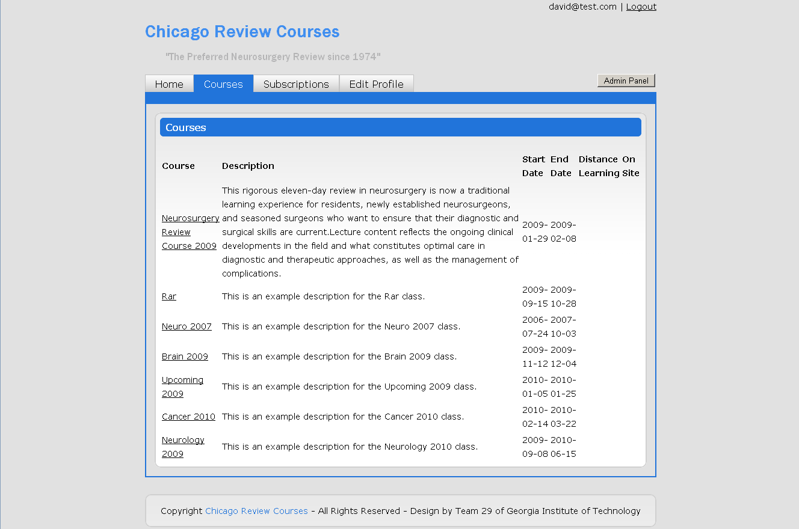
This is the normal user (student) view once you log in. The pages in this section are only accessible to registered users. This view right here is showing a list of lectures for the Neurosurgery Course. If you click on one of those rows, you will be taken to the next page. You can filter and sort the table. This table also shows whether a class will be available online (Distance Learning) or at the site of the class (On Site).
Subscriptions
This is the view of subscriptions that the current user is subscribed to. This page is also only accessible to registered users. The user can choose to purchase a new course or extend current subscriptions.
Video
This view shows the resources page for a specific lecture in a course. Users would be able to scroll down to see the different embedded resources.
Admin Main View
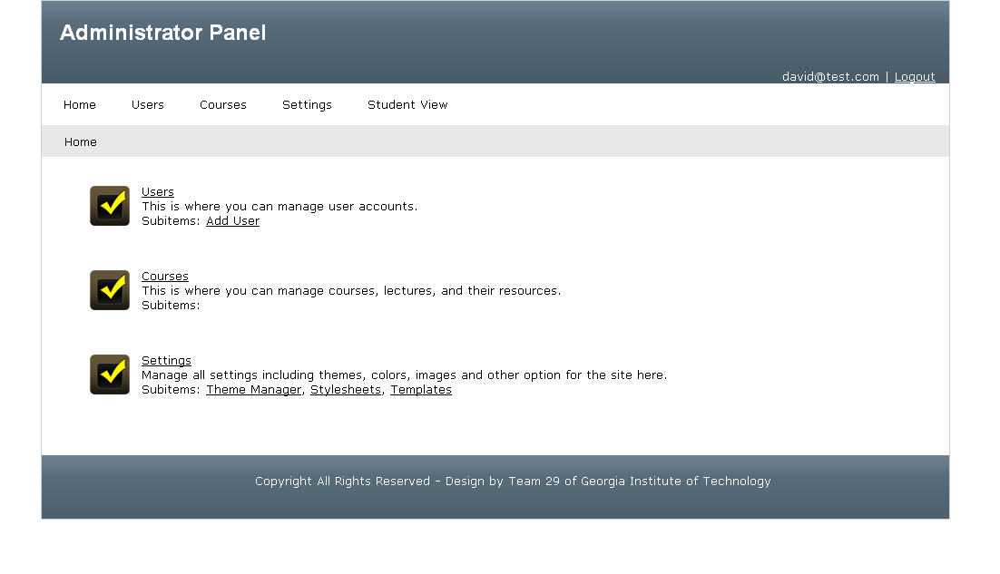
This view shows the main view that an administrator sees when they enter the administration panel. Admins can then choose to go to different sections including "Users", "Courses", & "Settings".
Admin Users
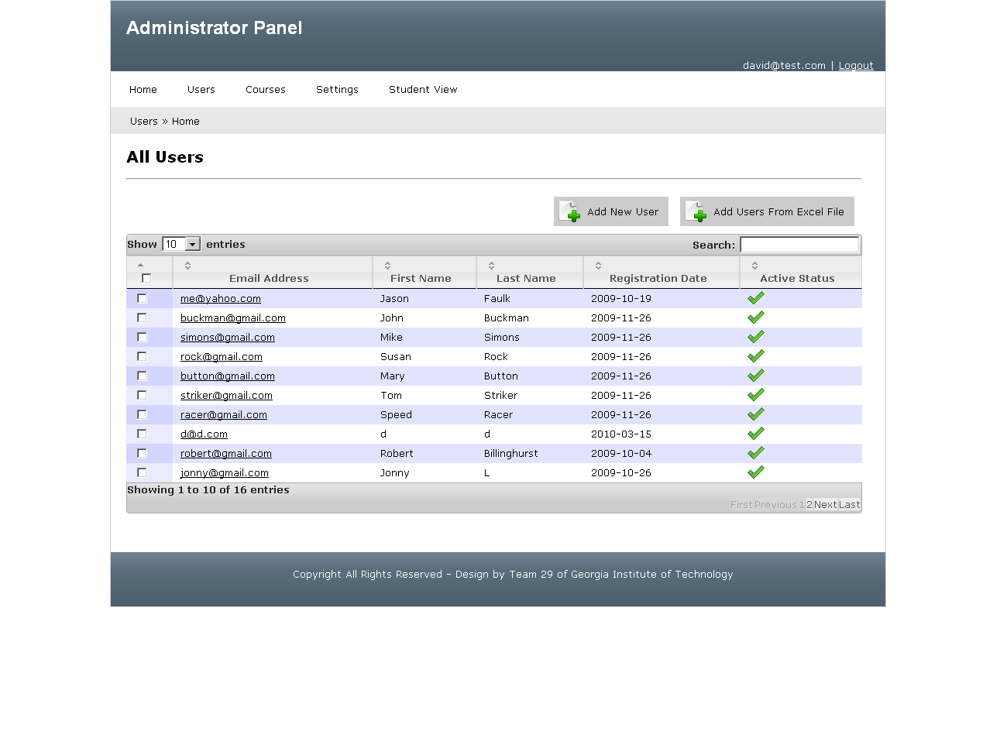
This shows the "Users" panel view for the administrator. Admins can add new users and also view all the users registered.
Admin Courses
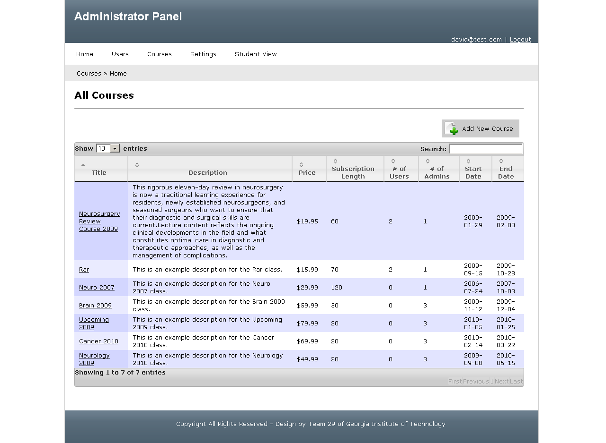
This shows the "Courses" section for the Administrators. Admins can add a new course, edit a course, and see user statistics for each course.
Admin Settings
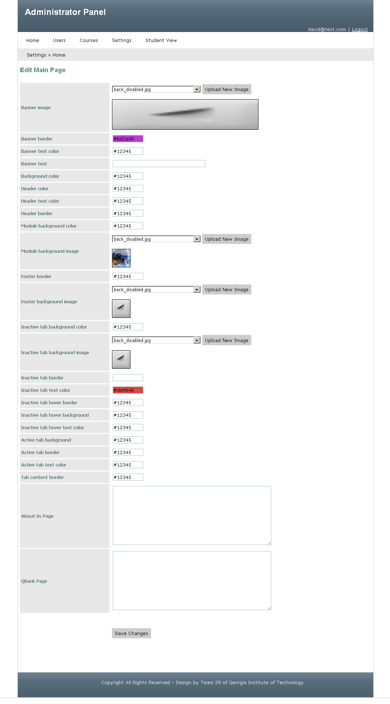
This shows the "Settings" section for the Administrator. Admins can edit individual entries that will update the CSS files accordingly as well as some text fields (About Us & QBank).
GUI Mockups
Marketing Site - Home
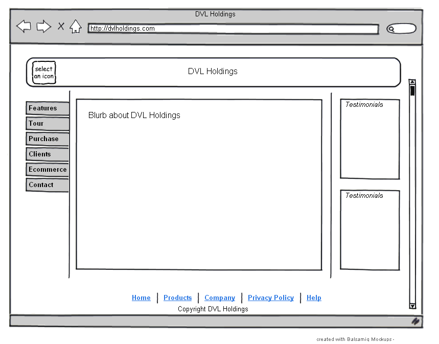
This shows the main view of the potential marketing site for DVL Holdings.
Marketing Site - Features
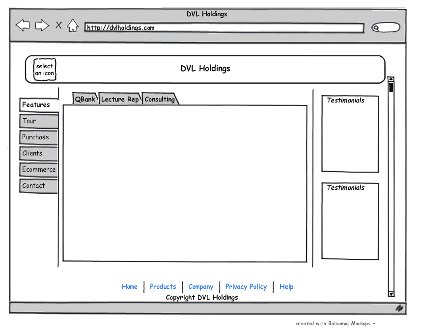
This shows the Features view of the potential marketing site for DVL Holdings.
Marketing Site- Tour
This shows the Tour view of the potential marketing site for DVL Holdings.
(See rest of Marketing Site Mock-ups in delivery documentation)
Login Screen
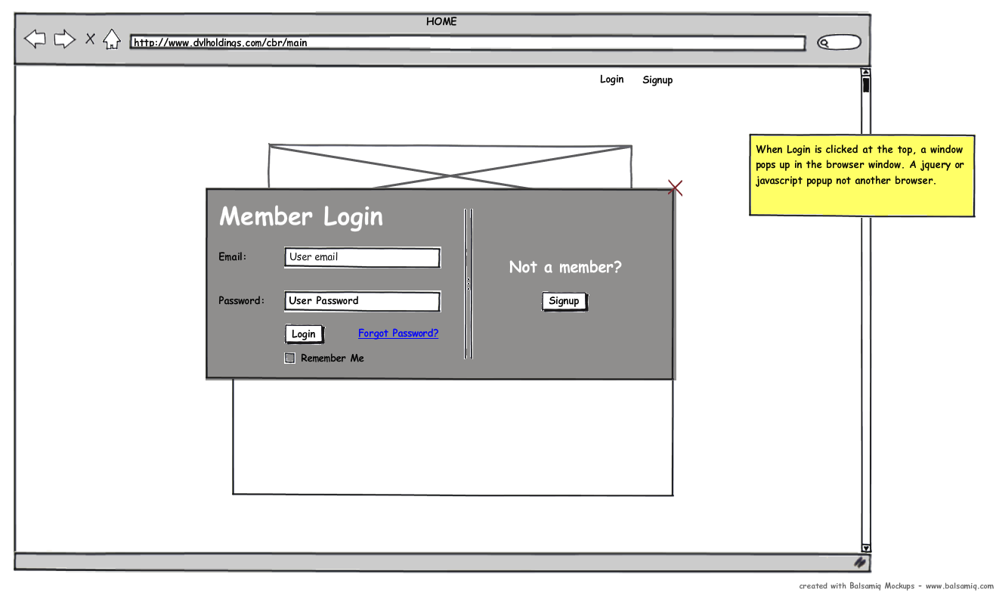
This is a mock-up of a potential scenario of a user logging into the site.
Resources - Mockup 1
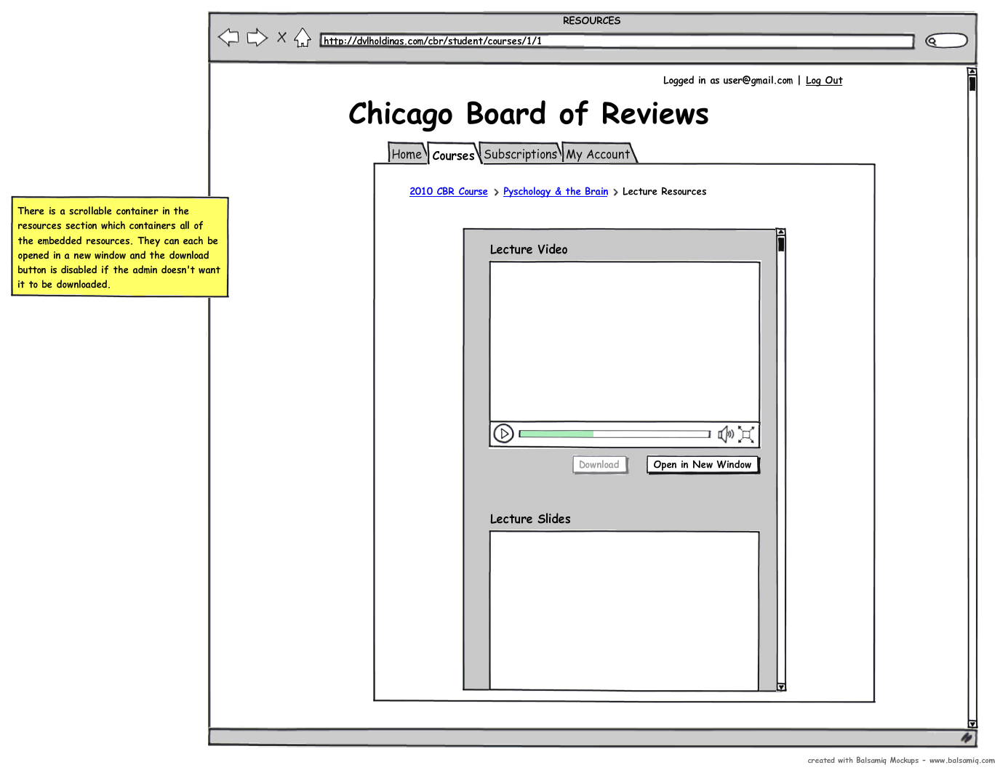
This is a mock-up of a potential scenario of a user viewing resources on the site.
Resources - Mockup 2
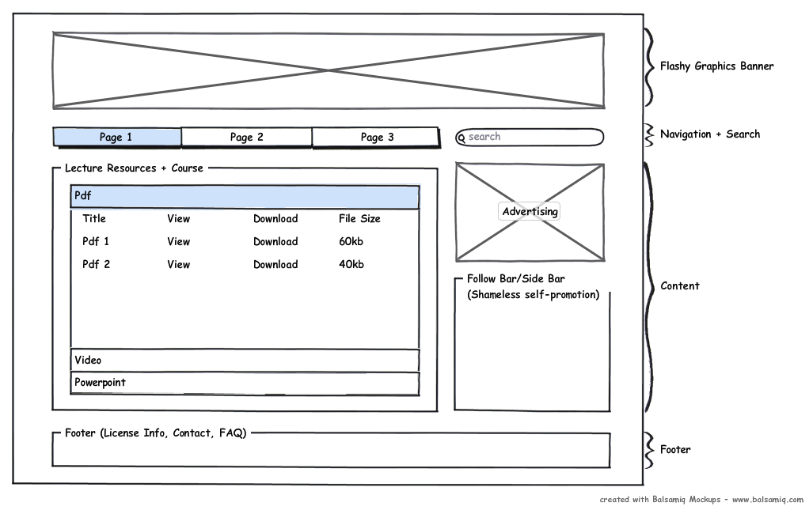
This is a mock-up of a potential scenario of a user viewing resources on the site.
*To view more mockups, please see the images in the delivery documentation.
Validation
Proposed features were validated in a long meeting with the customer. One agreed upon feature was an implementation of an embedded media player which prioritizes the ability to secure video content. Finally, numerous fixes to the existing architecture were proposed such as the revision of administrator actions as well as the level at which the site operates. The customer would like the ability to administer entire review courses as opposed to a single review course. Our team created an early design of the marketing website which only partially completes this ability. More work on the database and functionality must be done to completely create this ability.